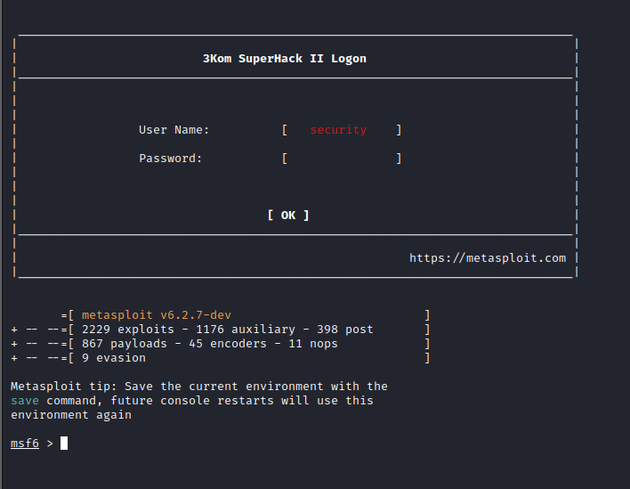
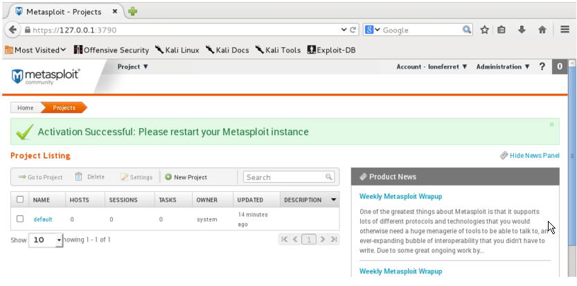
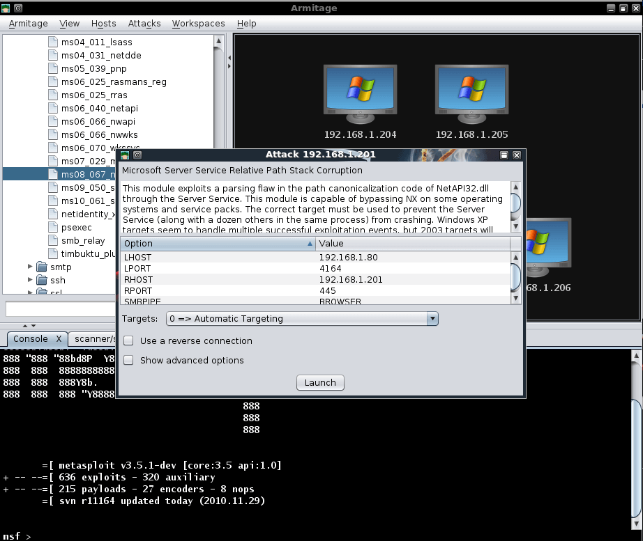
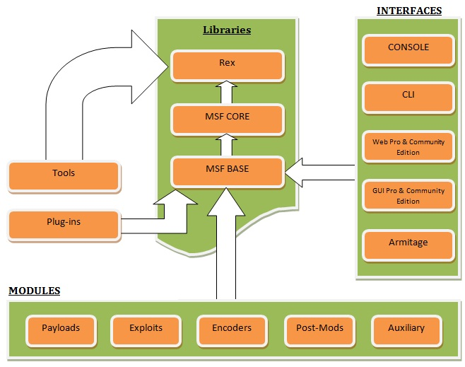
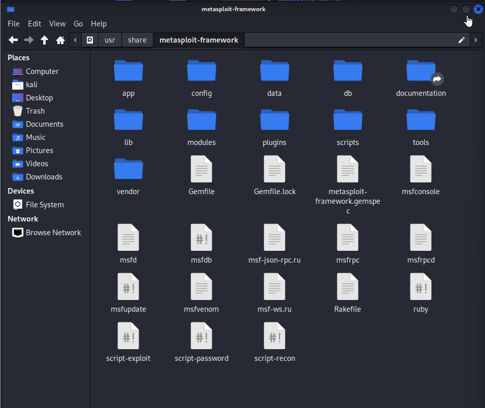

1. Introduction To The Metasploit Framework
History of the Metasploit Framework
- Developed by HD Moore in 2003
- Originally Developed in Perl
- Rewritten in Ruby in 2007
- In 2009, it was acquired by Rapid7 (FUNDED)
- Second Major realeased in 2019, Metasploit 5.0 (STABLE)
- In 2020, Metasploit 6.0 (Used still in 2022 with other sub- version)
What is the Metasploit Framework
- The Metasploit Framework (MSF) is an open-source, robust penetration testing and exploitation framework that is used by penetration testers & Security researchers globally.
- It provides penetration testers with a robust infrastructure required to automate every stage of the penetration testing life cycle.
- It is also used to developed & test exploits and has one of the world's largest database of public, tested exploits.
- The Metasplots Framework is designed to be modular, allowing for new functionality to be implemented with ease. (Automation & Open Source )
Metasploit Editions
- Metasploit Pro (Commercial)
- Metasploit Express (Commercial)
- Metasploit Framework (Community)
Terms to Know:
- Interface
- Methods of Interacting with the Metasploit Framwork. e.g. msf cosole.
- Module
- Pieces of code that perform a particular taskm an example of a module is an exploit.
- Vulnerability
- Weakness or flaw in a computer system or network that can eb exploited.
- Exploit
- Piece of code/module that is used to take advantage a vulnerability within a system, service or application.
- Payload
- Piece of code delivered to the target system by an exploit with the objective of executing arbitraty commands or providing remote access to an attacker.
- Listener
- A utility that listens for an incoming connection from a target.
Metasploit Framework Interfaces
Metasploit Framework Console
*. The Metasploit Framework Console (MSFconsolse) is an easy-to-use all in one interface that provides you with access to all the functionality of the Metasploit Framework.

Metasploit Framework CLI
- The Metasploit Framework Command Line Interface (MSFcli) is a command line utility that is used to facilitate the creation of automation scripts that utilize Metasploit modules.
- It can be used to redirect output from other tools in to msfcli and vice versa.
Note: MSFcli was discontinued in 2015, however, the same functionality can be leveraged through the MSFconsole.
Metasploit Community Edition
Metasploit Community Edition is a web based GUI front-end for the Metasploit Framework that simplifies network discovery and vulnerability identification.

Armitage
Armitage is a free Java based GUI front-end for the Metasploit Framework that simplifies network discovery, exploitation and post exploitation.

2. Metasploit Framework Architecture
MSF Architecture
|

|
- A module in the context of msf, is a piece of code that can be utilized by the MSF. ( anyone can create in ruby )
- The MSF libraries facilitate the execution of modules without having to write the code necessary in order to execute them. (via API )
|
MSF Modules
- Exploit
- A module that is used to take advantage of vulnerability and is typically paired with a payload.
- Payload
- Code that is delivered by MSF and remotely executed on the target after successful exploitation. An example of a payload is a reverse shell that initiates a connection from the target system back to the attacker. E.g. Reverse Shell payload
- Encoder
- Used to encode payloads in order to avoid AV(anti-virus) detection. For e.g. shikata_ga_nai is used to encode Windows payloads.
- NOPS
- Used to ensure that payloads sizes are consistent and ensure the stability of a payload when executed in memory. (History from Assembly Programming)
- Post
- - Modules used to perform functionality associated with post-exploitation.(Local Enum, shells, dumping credentials, etc.)
- Auxiliary
- A module that is used to perform additional functionality like port scanning and enumeration. (Fuzzing, brute-forcing)
MSF Payload Types
When working with exploits, MSF provides you with two types of payload, paired with an exploit.
-
Non-Staged Payload(single/inline)-
Payload that is sent to the target system in one part along with the exploit.
-
Staged Payload -
A staged payload is sent to the target in two parts:
- The first part ( stager ) contains a payload that is used to establihs a reverse connection back to the attacker's system, downloads the second part of the payload ( stage ) and executes it on the target system.
Stages & Stage
- Stagers - Stagers are typically used to establish a stable communication channel between the attacker and target, after which a stage payload is downloaded and executed on the target system.
- Stage - Payloads that are downloaded by the stager, and are typically used to execute a single command or spawn a reverse connection back to the attacker's system.
Meterpreter Payload
The Meterpreter (Meta-Interpreter) payload is an advanced multi-functional payload that is executed in memory on the target system making it difficult to detect.
It communicates over a stager socket and provides an attacker with an interactive command interpreter on the target system that facilitates the execution of system commands, file system navigation, keylogging and much more.
MSF File System Structure
The MSF file system is organized in a simple and easy to understand format and is organized into various directories.

MSF Module Locations
- MSF stores modules under the following directory on Linux systems:
/usr/share/metasploit-framework/modules
- + User specified modules are stored under the following directory on Linux systems:
~/.ms4/modules